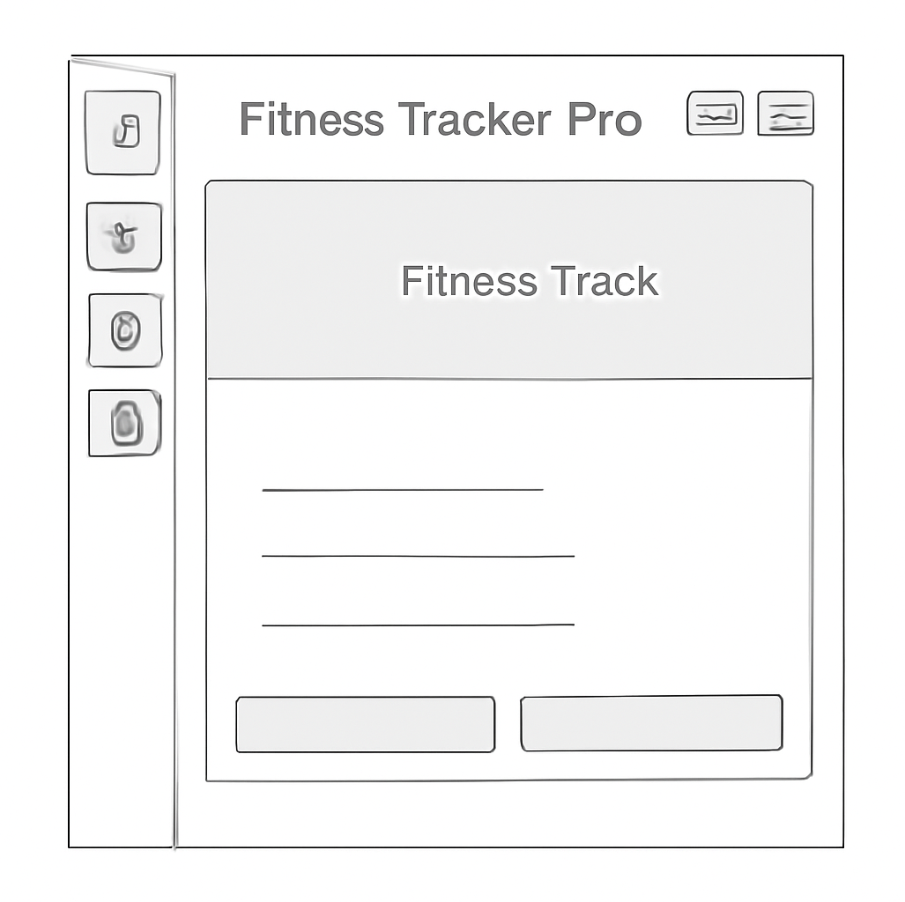

Site Name: Fitness Tracker Pro
Reason for Choosing: A site dedicated to tracking fitness activities, exercise logs, and progress toward fitness goals.
This site serves as a tool for individuals to log their exercises, track calories burned, total steps, and view their progress towards fitness goals. It provides a comprehensive tracking system for fitness enthusiasts.
Scenario 1: "How can I log my exercise and track calories?"
Scenario 2: "How do I view my total steps and fitness progress?"
Primary Color: Green (#4CAF50) - Used for buttons, header background, and call-to-action areas.
Secondary Color: White (#FFFFFF) - Used for the background of the main content and data sections.
Font 1: Roboto - Used for body text.
Font 2: Lato - Used for headings and important titles.
Here’s a simple representation of the home page layout for both mobile and desktop views:
This document uses basic CSS to style the website, following the color scheme and typography described above.
This site has been tested for validation, accessibility, performance, and SEO using the common tools (W3C Validator, Lighthouse, etc.).